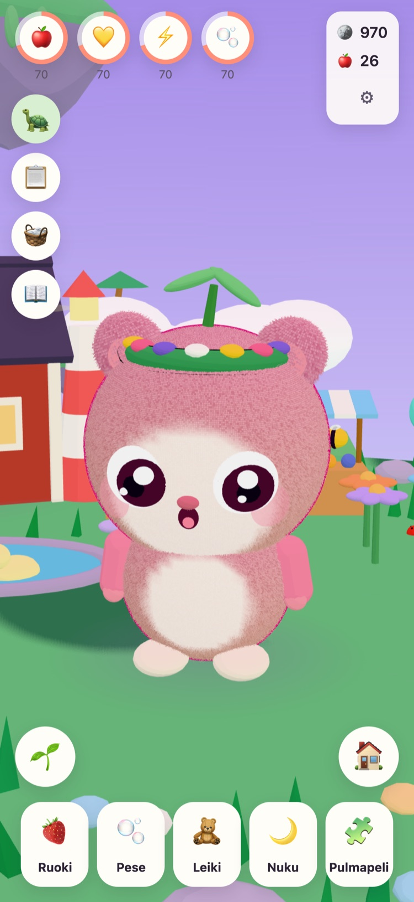
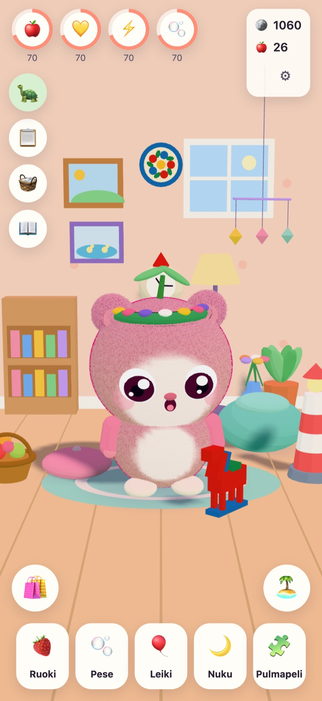
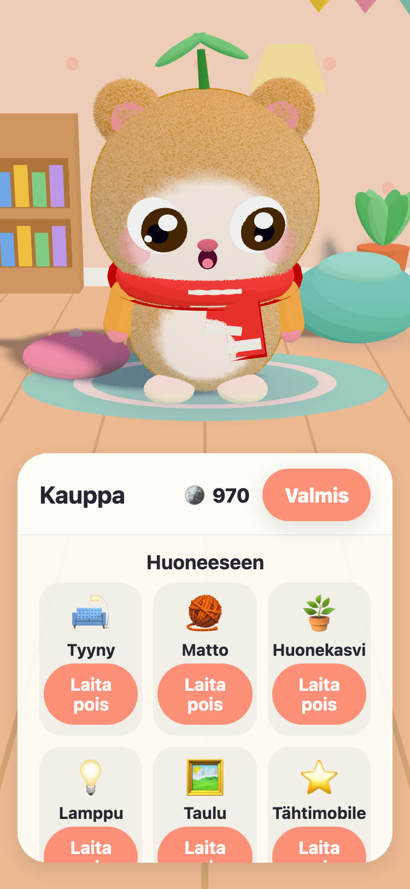
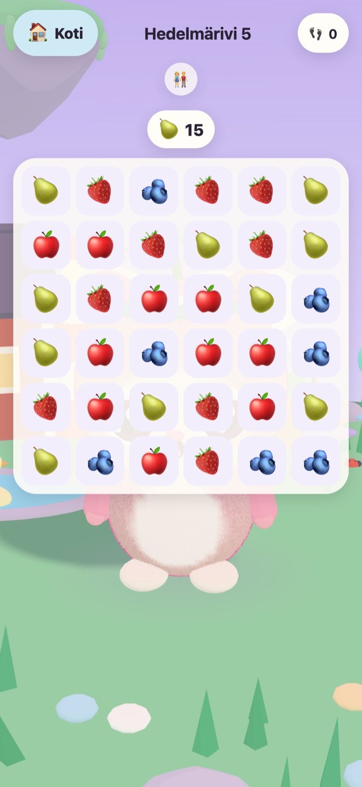

JUNOLittle Worlds
Kuoriuta Juno, pidä siitä huolta ja ratkaise lempeitä pulmia, jotka herättävät leijuvan saaren. Rauhallinen peli 6–10-vuotiaille lapsille iPhonelle ja iPadille.
Hei! Löysin kolme lämmintä munaa. Mikä niistä on sinun?
- Ei mainoksia
- Ei seurantaa
- Ei tiliä
- Ei ajastimia eikä painetta




Ihan oma pieni ystävä
Ukki Tintin, vanha kilpikonna, joka pitää huolta Niittysaaresta, on löytänyt kolme lämmintä munaa. Lapsesi valitsee yhden ja antaa nimen sille, joka kuoriutuu. Siitä lähtien Juno on lapsen oma: sitä saa ruokkia, pestä, leikittää ja laittaa päiväunille.
-
Valitse muna
Kolme lämmintä munaa, kolme väriä. Lapsesi valitsee yhden ja katsoo, kun se kuoriutuu.
-
Nimeä ja rakasta
Ruokaa, pesua, leikkiä ja päiväunia. Juno näyttää, miltä sille tuntuu, ja kasvaa ystävyyden kasvaessa.
-
Herätä saari
Jokainen pulmapelin tähti tuo valoa takaisin Niittysaarelle, kunnes kukat, mehiläiset ja ankat ovat taas kotona.
Ruoki, pese, leiki, nuku
Erilaisia ruokia ja leluja, kuplia kylvyssä ja Juno, joka näyttää, miltä sille tuntuu. Tarpeet laskevat hitaasti eivätkä koskaan nollaan, joten Juno ei koskaan katoa.
57 lempeää pulmaa
Hedelmärivi, Muistipuutarha sekä Eläinten äänet ja Ajoneuvojen äänet oikeine äänityksineen. Tähdet tulevat siirroista, ei koskaan ajasta, ja uudelleen yrittäminen on aina ilmaista.
Saari, joka herää
Kukkapuutarha avautuu ja mehiläiset saapuvat, Ankkalampi täyttyy vedestä ja ankoista, ja siemenistä kasvaa omenoita ja mansikoita kasvimaalla.
Huone, josta tehdä kodikas
Pulmapeleistä ja päivän tehtävistä saaduilla kolikoilla voi ostaa koristeita Junon huoneeseen ja vaatteita sen päälle. Mikään kolikkokaupassa ei maksa oikeaa rahaa.
Luetaan ääneen
Ukki Tintin lukee jokaisen repliikin ääneen omalla lämpimällä äänellään lapsille, jotka eivät vielä osaa lukea. Napauta häntä, niin kuulet sen uudelleen.
Oma osio vanhemmille
Lapsilukon takana: kieli, ääneen lukeminen, äänet, nukkumaanmeno ja lempeä taukomuistutus. Nukkumaanmenoaikaan Juno nukkuu, ja pulmapelit odottavat aamuun.
Puhuu 21 kieltä
Ukki Tintin puhuu lapsellesi tämän omalla kielellä. Valitse kieli Vanhemmille-osiossa tai anna pelin seurata laitteen kieltä.
English Svenska Dansk Norsk Suomi Deutsch Nederlands Français Español Italiano Português (Brasil) Polski Русский Ελληνικά Türkçe Bahasa Melayu Kiswahili हिन्दी 日本語 한국어 简体中文
Isoisän tekemä
JUNO on tehty Ruotsissa. Sen teki isoisä lapsenlapselleen: peli, jota hän näkee mielellään tytön pelaavan. Ukki Tintin, pelin kilpikonna, on hän itse.
Siksi säännöt ovat yksinkertaiset. Ei mitään, mikä painostaa, ei mitään, mikä huijaa, eikä mitään, mikä kerää tietoja lapsestasi.
Ilmainen, ei mainoksia
JUNOn lataaminen on ilmaista, eikä siinä ole mainoksia, seurantaa eikä tiliä. Kaikki, mitä lapsesi tekee, pysyy laitteellasi. Katso tietosuojasivu.
Aikuinen voi ostaa JUNO Plusin tai Talvipaketin Vanhemmille-osiosta lapsilukon takaa. Molemmat ovat kertaostoksia, jotka voit palauttaa ja jakaa perheesi kanssa.